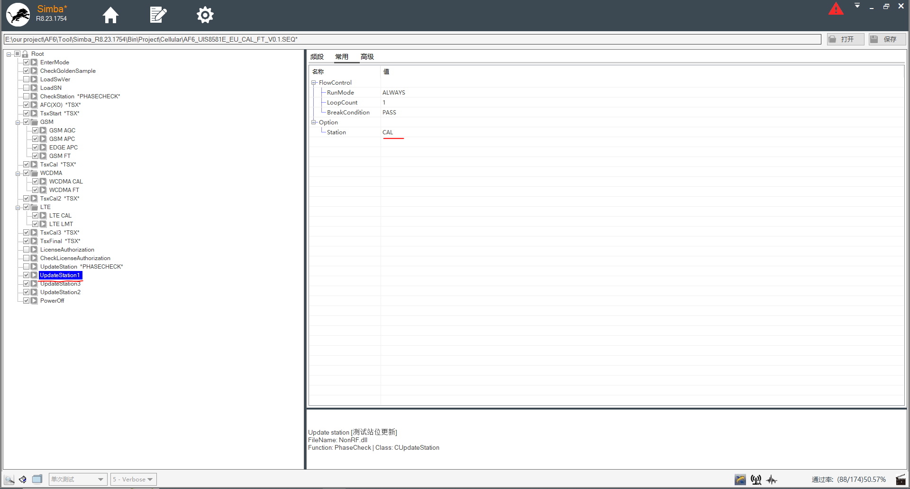
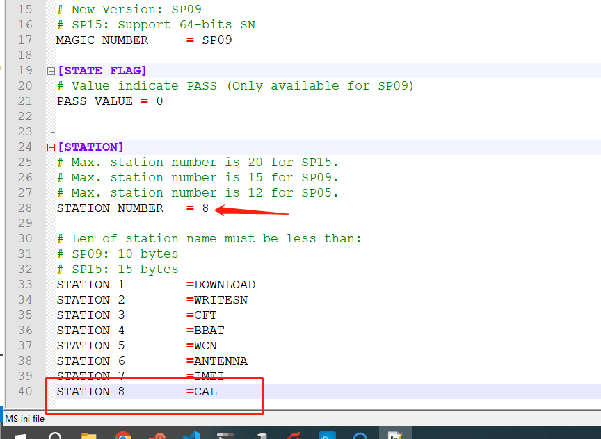

概要¶
一般项目都要显示校准,综测,耦合标志位,说一下展锐A12的校准标志位流程
simba¶
使用simba工具,最后选择标志位,写入.如下图片,可以看到有UpdateStation1,UpdateStation2,UpdateStation3,三个选项
分别是对应写入, CAL,CFT,ANTENNA三个标志位,也就是校准,综测,耦合(天线)

展锐校准代码¶
idh.code/vendor/sprd/proprietories-source/engpc/modules/libmiscdata/miscdata.c
可以看到里面有写入miscdata的值,其中PROP_MISCDATA_PATH的属性值是/dev/block/by-name/,所以拼接miscdata就是/dev/block/by-name/miscdata
int eng_write_miscdata(char *databuf, int data_len) {
int ret = 0;
int len;
int fd = -1;
char prop[128] = {0};
char miscdata_path[128] = {0};
if (-1 == property_get(PROP_MISCDATA_PATH, prop, "")){
ENG_LOG("%s: get partitionpath fail\n", __FUNCTION__);
return -1;
}
sprintf(miscdata_path, "%smiscdata", prop);
fd = open(miscdata_path, O_WRONLY);
if (fd >= 0) {
ENG_LOG("%s open Ok miscdata_path = %s ", __FUNCTION__,
miscdata_path);
#ifdef CONFIG_NAND
__s64 up_sz = data_len;
ioctl(fd, UBI_IOCVOLUP, &up_sz);
#endif
len = write(fd, databuf, data_len);
if (len <= 0) {
ret = -2;
ENG_LOG("%s read fail miscdata_path = %s ", __FUNCTION__,
miscdata_path);
}
fsync(fd);
close(fd);
} else {
ENG_LOG("%s open fail miscdata_path = %s ", __FUNCTION__,
miscdata_path);
ret = -3;
}
return ret;
}
开机读取标志位¶
在uboot阶段,添加了一个函数,开机读取标志位,传到cmdline,然后在init解析
bsp/bootloader/u-boot15/pax/pax.c
sprintf(command_line, "%s paxdroid.pass=0x%x", command_line, get_phase_check_sation_raw(0));
int pax_command_line_handle(unsigned char *command_line, int inlen)
{
char tbuf[4096];
int ret;
memset(command_line,0,inlen);
memset(tbuf,0,sizeof(tbuf));
ret = pax_get_sn(tbuf,sizeof(tbuf));
if(ret!=0){
tbuf[0]=0;
}else{
if(tbuf[0]==0xff)
tbuf[0]=0;
}
tbuf[63]=0;
sprintf(command_line,
"%s paxdroid.sn=%s", command_line, tbuf);
memset(tbuf,0,sizeof(tbuf));
ret = pax_get_exsn(tbuf,sizeof(tbuf));
if(ret!=0){
tbuf[0]=0;
}else{
if(tbuf[0]==0xff)
tbuf[0]=0;
}
tbuf[63]=0;
sprintf(command_line,
"%s paxdroid.exsn=%s", command_line, tbuf);
#if 1
memset(tbuf,0,sizeof(tbuf));
if(!misc_config_get("ethmac",tbuf)){
sprintf(command_line,
"%s ethmac=%s", command_line, tbuf);
}
sprintf(command_line,
"%s androidboot.poweronmode=%d", command_line, pax_porting_auto_power_on());
#endif
#if 0
extern int logo_bmp_from_uboot;
snprintf(command_line, len,
"%s bmp_logo=%d", command_line, logo_bmp_from_uboot);
#endif
sprintf(command_line,
"%s paxdroid.swrotation=%d", command_line, base_info_t->logo_rotation);
sprintf(command_line,
"%s paxdroid.tested=0x%x", command_line, get_phase_check_sation_raw(1));
sprintf(command_line,
"%s paxdroid.pass=0x%x", command_line, get_phase_check_sation_raw(0));
sprintf(command_line,
"%s androidboot.rotpk=%d", command_line, pax_porting_get_rotpk_enable());
sprintf(command_line,
"%s androidboot.paxproduct=%s", command_line, pax_get_product());
sprintf(command_line,
"%s androidboot.paxboard_id=%d", command_line, sprd_get_paxboard_id());
memset(tbuf,0,sizeof(tbuf));
pax_cfg_get("WIFI",tbuf,32);
if(strcmp(tbuf,"20")==0){
sprintf(command_line,
"%s androidboot.wifi=5g", command_line);
}else if(strcmp(tbuf,"29")==0){
sprintf(command_line,
"%s androidboot.wifi=5gu", command_line);
}else{
sprintf(command_line,
"%s androidboot.pax_usbhub=%s", command_line, base_info_t->usbhub);
sprintf(command_line,
"%s androidboot.wifi=2g", command_line);
}
memset(tbuf,0,sizeof(tbuf));
if(pax_cfg_get("LCD",tbuf,16) > 0){
ret = simple_strtoul(tbuf, NULL, 10);
sprintf(command_line,
"%s paxdroid.lcd_value=%d", command_line,ret);
}else if(lcd_id_get_lcd_soft_value() > 0){
sprintf(command_line,
"%s paxdroid.lcd_value=%d", command_line, lcd_id_get_lcd_soft_value());
}
memset(tbuf,0,sizeof(tbuf));
if(pax_cfg_get("TOUCH_SCREEN",tbuf,16) > 0){
ret = simple_strtoul(tbuf, NULL, 10);
sprintf(command_line,
"%s paxdroid.touch_value=%d", command_line,ret);
}else if(lcd_id_get_tp_soft_value() > 0){
sprintf(command_line,
"%s paxdroid.touch_value=%d", command_line, lcd_id_get_tp_soft_value());
}
memset(tbuf,0,sizeof(tbuf));
if(cfg_partition_get("LOCALE",tbuf, sizeof(tbuf)) > 0) {
sprintf(command_line,
"%s androidboot.locale=%s", command_line,tbuf);
}
memset(tbuf,0,sizeof(tbuf));
pax_porting_get_sn(tbuf,sizeof(tbuf));
sprintf(command_line,
"%s androidboot.cpu_uid=%s", command_line,tbuf);
#ifdef PAX_AUTH_DEBUG
sprintf(command_line,
"%s paxdroid.aboot_version=%s-debug", command_line, ABOOT_VERSION);
#else
sprintf(command_line,
"%s paxdroid.aboot_version=%s", command_line, ABOOT_VERSION);
#endif
sprintf(command_line,
"%s paxdroid.aboot_git=%s", command_line, UBOOT_GIT_VERSION);
memset(tbuf,0,sizeof(tbuf));
if(permanent_config_get("TERMINAL_NAME", tbuf)>0)
sprintf(command_line,
"%s paxdroid.TERMINAL_NAME=%s", command_line, tbuf);
ret = uboot_is_wr_rpmb_key();
sprintf(command_line,
"%s paxdroid.wr_rpmb_key=%s", command_line, ret>0?"1":"0");
memset(tbuf,0,sizeof(tbuf));
pax_cfg_get_base64(tbuf,sizeof(tbuf));
if(authinfo.FirmDebugStatus)
pax_cfg_get_base64_overlay(tbuf, sizeof(tbuf));
sprintf(command_line,
"%s paxdroid.configfile=%s", command_line, tbuf);
memset(tbuf,0,sizeof(tbuf));
ret = base64encode(&authinfo,sizeof(authinfo),tbuf,sizeof(tbuf));
tbuf[ret] = 0;
sprintf(command_line,
"%s authinfo.content=%s", command_line, tbuf);
return 0;
}
idh.code/bsp/bootloader/u-boot15/common/loader/loader_common.c
在fdt_fixup_all的最后,拼接cmdline的paxdroid.pass=0x7ffe
在get_phase_check_sation_raw里面读取PRODUCTINFO_FILE_PATITION就是miscdata的值
void fdt_fixup_all(u8 *fdt_blob)
{
...
char buftemp[4096]={0};
pax_command_line_handle(buftemp,4096);
fdt_chosen_bootargs_append(fdt_blob, buftemp, 1);
return;
}
// testorpass 0-pass 1-tested
unsigned long get_phase_check_sation_raw(char testorpass){
SP09_PHASE_CHECK_T phase_check_sp09;
SP15_PHASE_CHECK_T phase_check_sp15;
uint32_t magic;
if (0 != common_raw_read(PRODUCTINFO_FILE_PATITION, sizeof(magic), (uint64_t)0, (char *)&magic)) {
errorf("read miscdata error.\n");
return 0xffffffff;
}
if(magic == SP09_SPPH_MAGIC_NUMBER){
printf("SP09_SPPH_MAGIC_NUMBER\n");
if(common_raw_read(PRODUCTINFO_FILE_PATITION,sizeof(phase_check_sp09), (uint64_t)0, (char *)&phase_check_sp09)){
errorf("sp09 read miscdata error.\n");
return 0xffffffff;
}
printf("phase_check_sp09 iTestSign 0x%x \n",phase_check_sp09.iTestSign);
printf("phase_check_sp09 iItem 0x%x \n",phase_check_sp09.iItem);
if(testorpass){
return phase_check_sp09.iTestSign;
}else{
return phase_check_sp09.iItem;
}
}else if(magic == SP15_SPPH_MAGIC_NUMBER){
printf("SP15_SPPH_MAGIC_NUMBER\n");
if(common_raw_read(PRODUCTINFO_FILE_PATITION, sizeof(phase_check_sp15), (uint64_t)0 ,(char *)&phase_check_sp15)){
errorf("sp15 read miscdata error.\n");
return 0xffffffff;
}
printf("phase_check_sp15 iTestSign 0x%x \n",phase_check_sp15.iTestSign);
printf("phase_check_sp15 iItem 0x%x \n",phase_check_sp15.iItem);
if(testorpass){
return phase_check_sp15.iTestSign;
}else{
return phase_check_sp15.iItem;
}
}
return 0xffffffff;
}
idh.code/bsp/bootloader/u-boot15/include/loader_common.h
所以看到,不管是sp15还是sp09,都是取iItem的值
#define PRODUCTINFO_FILE_PATITION "miscdata"
typedef struct _tagSP09_PHASE_CHECK {
uint32_t Magic; // "SP09"
char SN1[SP09_MAX_SN_LEN]; // SN , SN_LEN=24
char SN2[SP09_MAX_SN_LEN]; // add for Mobile
int StationNum; // the test station number of the testing
char StationName[SP09_MAX_STATION_NUM][SP09_MAX_STATION_NAME_LEN];
unsigned char Reserved[13]; //
unsigned char SignFlag;
char szLastFailDescription[SP09_MAX_LAST_DESCRIPTION_LEN];
unsigned short iTestSign; // Bit0~Bit14 ---> station0~station 14
//if tested. 0: tested, 1: not tested
unsigned short iItem; // part1: Bit0~ Bit_14 indicate test Station,1 : Pass,
} SP09_PHASE_CHECK_T, *LPSP09_PHASE_CHECK_T;
typedef struct _tagSP15_PHASE_CHECK {
uint32_t Magic; // "SP15"
char SN1[SP15_MAX_SN_LEN]; // SN , SN_LEN=64
char SN2[SP15_MAX_SN_LEN]; // add for Mobile
int StationNum; // the test station number of the testing
char StationName[SP15_MAX_STATION_NUM][SP15_MAX_STATION_NAME_LEN];
unsigned char Reserved[13]; //
unsigned char SignFlag;
char szLastFailDescription[SP15_MAX_LAST_DESCRIPTION_LEN];
unsigned int iTestSign; // Bit0~Bit14 ---> station0~station 14
//if tested. 0: tested, 1: not tested
unsigned int iItem; // part1: Bit0~ Bit_14 indicate test Station,1 : Pass,
} SP15_PHASE_CHECK_T, *LPSP15_PHASE_CHECK_T;
system/core/init/property_service.cpp
在解析cmdline里面的import_pax_kernel_nv函数,检测到paxdroid.pass值,赋予ro.fac.ft.tested
然后解析第三位1<<2的值如果是0,就代表有综测过persist.radio.ft=1
然后解析第六位1<<5的值如果是0,就代表有耦合过persist.radio.coupling=1
然后解析第八位1<<7的值如果是0,就代表有耦合过persist.radio.cal=1
void import_pax_kernel_nv(const std::string& key, const std::string& value) {
if (StartsWith(key, "paxdroid.sn")) {
InitPropertySet("ro.fac.sn", value.c_str());
InitPropertySet("pax.sp.SN", value.c_str());
} else if (StartsWith(key, "paxdroid.exsn")) {
InitPropertySet("ro.fac.exsn", value.c_str());
}else if (StartsWith(key, "paxdroid.swrotation")) {
InitPropertySet("ro.sf.swrotation", value.c_str());
} else if (StartsWith(key, "paxdroid.TERMINAL_NAME")) {
InitPropertySet("ro.fac.permanent.TERMINAL_NAME", value.c_str());
} else if (StartsWith(key, "paxdroid.wr_rpmb_key")) {
InitPropertySet("ro.fac.wr_rpmb_key", value.c_str());
}
/*[FEATURE]-ADD-BEGIN by xiaolu@paxsz.com 2023-11-13, Added virtual lcd and tp support*/
else if (StartsWith(key, "paxdroid.touch_value")) {
InitPropertySet("ro.fac.touch_value", value.c_str());
} else if (StartsWith(key, "paxdroid.lcd_value")) {
InitPropertySet("ro.fac.lcd_value", value.c_str());
}
/* [FEATURE]-ADD-END by xiaolu@paxsz.com 2023-11-13, Added virtual lcd and tp support*/
else if (StartsWith(key, "paxdroid.tested")) {
InitPropertySet("ro.fac.ft.tested", value.c_str());
} else if (StartsWith(key, "paxdroid.pass")) {
InitPropertySet("ro.fac.ft.pass", value.c_str());
unsigned long pass = strtoul(value.c_str(),NULL,16);
// unsigned long pass = strtoul("0xffffff52",NULL,16);
if(pass & (unsigned long)(1<<3)){ //BBAT
InitPropertySet("persist.bbat.ft", "0");
}else{
InitPropertySet("persist.bbat.ft", "1");
}
if(pass & (unsigned long)(1<<2)){ //CFT
InitPropertySet("persist.radio.ft", "0");
}else{
InitPropertySet("persist.radio.ft", "1");
}
if(pass & (unsigned long)(1<<5)){ //ANTENNA
InitPropertySet("persist.radio.coupling", "0");
}else{
InitPropertySet("persist.radio.coupling", "1");
}
if(pass & (unsigned long)(1<<4)){ //WCN
InitPropertySet("persist.wcn.ft", "0");
}else{
InitPropertySet("persist.wcn.ft", "1");
}
if(pass & (unsigned long)(1<<7)){ //CAL
InitPropertySet("persist.radio.cal", "0");
}else{
InitPropertySet("persist.radio.cal", "1");
}
} else if (StartsWith(key, "paxdroid.aboot_version")){
InitPropertySet("ro.fac.aboot_version", value.c_str());
} else if (StartsWith(key, "paxdroid.aboot_git")){
InitPropertySet("ro.fac.aboot_version_git", value.c_str());
} else if (StartsWith(key, "paxdroid.configfile")){
int len;
unsigned char *str;
unsigned char *val_str;
len = value.size();
str = (unsigned char *)malloc(len+1);
val_str = (unsigned char *)malloc(len+1);
if (str == NULL || NULL == val_str) {
/* badly */
}
strcpy((char* __restrict)val_str,(const char *)value.c_str());
len = base64decode((const unsigned char *)val_str, len, str, len);
str[len] = 0;
if (strncmp((const char *)(str+len-16), "SIGNED_VER:", (size_t)(sizeof("SIGNED_VER:")-1)) ==0) {
/* remove signed data */
*(str+len-284) = 0;
}
free(val_str);
parse_config_file((const char *)str);
free(str);
} else if (StartsWith(key, "authinfo.content")) {
int len;
unsigned char *str;
unsigned char *val_str;
len = value.size();
str = (unsigned char *)malloc(len+1);
val_str = (unsigned char *)malloc(len+1);
if (str == NULL || NULL == val_str) {
/* badly */
}
strcpy((char* __restrict)val_str,(const char *)value.c_str());
len = base64decode((const unsigned char *)val_str, len, str, len);
POS_AUTH_INFO *auth = (POS_AUTH_INFO *)str;
setAuthProp(auth);
free(val_str);
free(str);
}
}
问题¶
遇到使用simba工具,cal标志位写不进去, CFT,ANTENNA都可以写进去
原因,需要把FactoryDownload_R25.21.1401\Bin\PhaseCheck.ini添加一个CAL标志位
